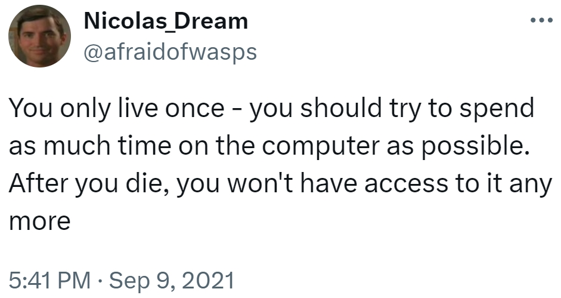

Currently trying an ultimate phone/media detox. I think there are too many flaws for it to be "feasible"— but more so being absurd in the first place.
Sort of using Camus' use of absurd. Why look for it in the first place?
To live as a "present citizen" is to engage in present things. Culture, media, art, society: all of it fits in a hollistic view of "what is" culture. INCLUDING ITS FLAWS AND GREATS.
That isn't to say I must be totally assimilated by culture; blindly following trends, forgoeing [sic] the building of my self, is not the goal.
The argument isn't in favour or against the current qualms of culture. No, it's just absurd to reject the state of it, in favour of living parallel to culture. (Perhaps it is in favour of present culture, but I don't like/agree with doing nothing to change society for good. That is your duty as a human.)
Instead, a CULTURE CITIZEN/CITIZEN OF CULTURE should engage with elements native to their current culture. Current memes (units of information), memes (internet), current media, current technology, etc. Charecteristics of a culture should not be mindlessly rejected ideology.
Thinking a little harder about this, it does sound like I'm in favour of present culture. However, I think I am more neutral on this. I am not saying 2024 culture is bad. It isn't good either.
It simply IS!
CITIZENS OF CULTURE are those that live in the present. With present tools, present language, present norms.
IT IS A SHAME to not ENGAGE. Take advantage of your current culture, whether it's tools, media, humour. Use them to its maximum potential. That is your duty as a CITIZEN.
(This is starting to sound like propaganda. Maybe this is some weird Stockhold syndrome thing by capitalism.)
It is O.K. to deviate or even disagree with culture. In fact, to do so is necessary for growth. But today's culture, the PRESENT still plays a crucial role in everyone's lives. ENGAGE.
Back to top